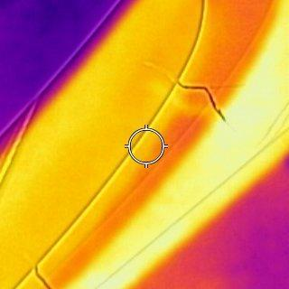

Image Classification withDeep Learning
Damage Detection on Wind Turbine Blades

Damage Detection on Wind Turbine Blades

The dataset used here I helped make at UVU using thermal images taken on a small wind turbine replica about 7 feet tall. The Dataset contains 1000 imgages split into 800 training, 100 Validation and 200 test. There is an even split of 500 faulty blade images and 500 healthy blade images.
I used a custom model built in Keras with a Tensorflow backend. To prevent overfitting because of the small dataset image augmentation was used as well as dropout layers regularizers in the convolutional layers. Using this method I was able to acheive 85% test accuracy without overfitting. I multiple methods to find the best hyperperameters including manual tuning, random search and grid search. Perameters tuned include learning rate, batch size, number of epochs, dropout rate, number of filters, filter size, and number of dense layers.


I also tried some transfer learning using other architectures and acheived much higher test accuracys. Xception was the superior architecture acheiving 98.5% with no overfitting. The convolutional weights were taken from 'Imagnet'. But the dense layers were generated at random to be trained on the dataset.